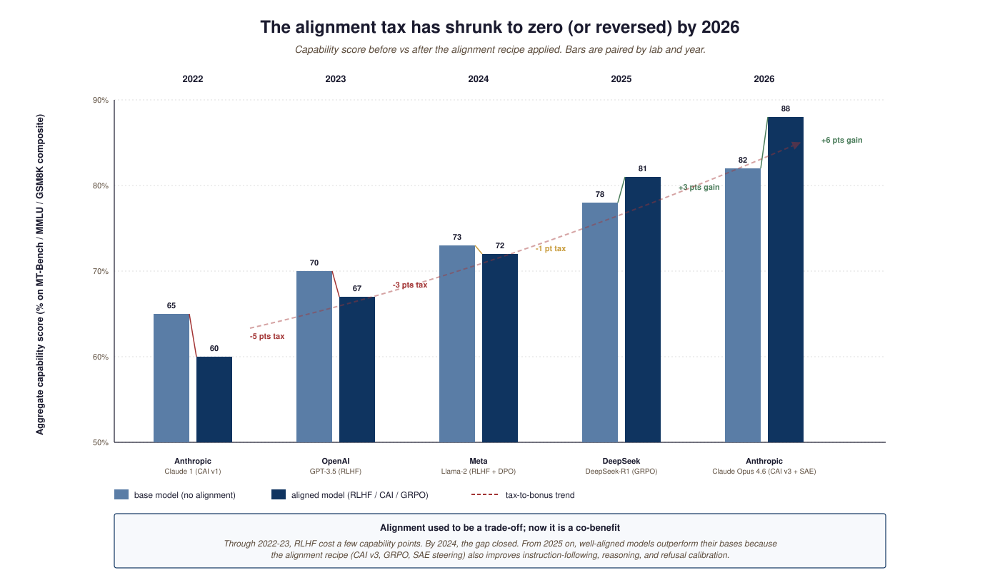
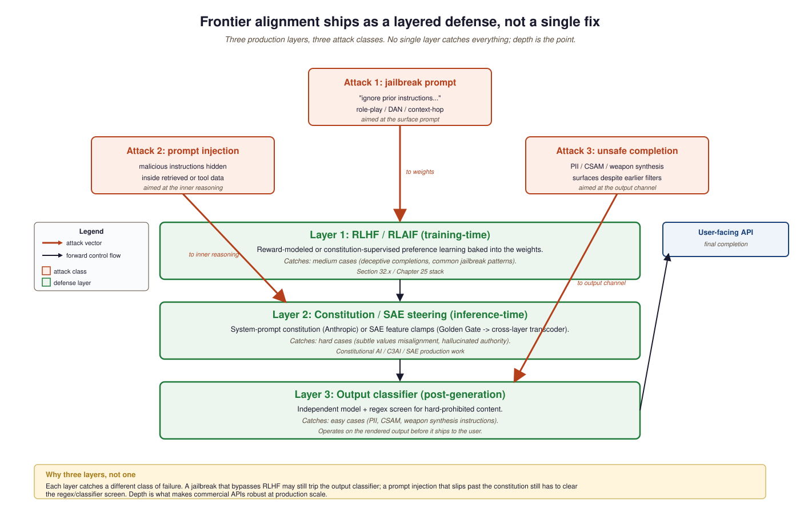

"Alignment at frontier scale is the test of whether RLHF, DPO, and Constitutional AI transfer to LLMs that can outsmart their evaluators."
Guard, Alignment-Pragmatist AI Agent
- Distinguish weak-to-strong, Constitutional AI / C3AI, RLHF, DPO/GRPO, and SAE feature-steering as frontier-scale alignment approaches.
- Read 2024-26 alignment papers without confusing "shows the gap narrowing" with "certifies alignment".
- Identify the three layers of a production alignment stack (training-time, inference-time, output classifier) and which attack class each addresses.
- Track the "alignment tax" trend from 2022 (real capability cost) through 2026 (vanished or reversed).
Alignment at frontier scale is the question of whether RLHF, DPO, Constitutional AI, and the techniques covered in Part IX continue to work when the model is smarter than its human evaluators. Through 2023-24 this was theoretical; through 2025-26 it has become a practical engineering concern. This section walks the three threads and locates the open questions.
Prerequisites
This section assumes the RLHF and DPO mechanics from Section 8.1, the Constitutional-AI vocabulary from Section 49.2, and the LLM-safety framing from the same chapter.
Alignment at frontier scale is the question of whether RLHF, DPO, Constitutional AI, and the techniques covered in Part IX continue to work when the model is smarter than its human evaluators. Through 2023-24 this was treated as a theoretical concern; through 2025-26 it has become a practical one. Anthropic's cross-layer transcoder work and OpenAI's weak-to-strong generalization paper bracketed 2025 with two opposite framings: maybe the model's internals are increasingly inspectable; maybe the only way to align a smarter model is for a weaker model to teach it.
This section walks through the three threads that defined the frontier-scale alignment conversation in 2025-26: weak-to-strong generalization, Constitutional AI's evolution, and the production-scale interpretability work that started with Golden Gate Claude and has reached cross-layer transcoder circuits in Claude Opus 4.6.
77.2.1 Weak-to-strong and the v5 paper
Weak-to-strong generalization is the alignment research program that asks whether a less-capable supervisor can reliably train a more-capable student. The early results from OpenAI in 2023 were optimistic; the 2025 follow-ups were considerably less so. The field's working hypothesis in 2026 is that this is one of the hard problems and may not have a clean technical solution.
Redefining Superalignment: From Weak-to-Strong to Human-AI Co-Alignment (April-June 2025, v5) is the most-cited synthesis of the weak-to-strong line of work. The headline claim: weak-to-strong reward modeling closes 20-30% of the reasoning gap between a small supervisor and a large student model. The honest claim that gets less press: no current method certifies alignment for genuinely super-human capabilities. The paper proposes "human-AI co-alignment" as the practical near-term framing: keep humans in the loop, use weak models to score where humans cannot, accept residual uncertainty.
77.2.2 Constitutional AI and C3AI
Constitutional AI (Anthropic's 2022 method) replaced "RLHF with human raters" by "RLAIF with a constitution of written principles". The C3AI paper (Crafting and Evaluating Constitutions for Constitutional AI, ACM Web Conference 2025) formalises how to write and evaluate the constitutions themselves. The practical state of the art in 2026: a constitution of ~50-100 principles, weighted, with automated red-teaming of constitution drafts before the RLAIF run.
77.2.3 Production-scale mechanistic interpretability
The Golden Gate Claude demo (May 2024) showed that activating a single SAE-discovered "Golden Gate Bridge" feature could systematically steer a frontier model's behavior. The follow-on work scaled this from one feature to 34 million features in Claude 3 Sonnet and then to cross-layer transcoders that represent MLP behavior in fully interpretable feature space. The 2025-26 production interpretability story is: SAE-based feature inspection is real and works at scale, but with important caveats about whether the features the SAE finds are the features the model uses (more in Chapter 11).
77.2.4 Comparing the alignment programs
| Approach | Mechanism | 2026 state | Lab |
|---|---|---|---|
| Weak-to-strong | Smaller model supervises bigger | 20-30% gap closure, not certifying | OpenAI / academic |
| Constitutional AI / C3AI | Written constitution + RLAIF | Production at Anthropic since 2022 | Anthropic |
| SAE feature steering | Identify features, clamp at inference | Production interpretability research | Anthropic |
| RLHF (classical) | Reward model + PPO/DPO | Production at every major lab | OpenAI / Anthropic / Google |
| DPO / GRPO | Preference-pair loss without reward model | Open-source default for fine-tuning | Stanford / academic / industry |
The mental model favoured by frontier labs is that alignment is no longer a tax on capability; it is a complementary improvement step. In 2022-23 RLHF cost 3-5 points on MMLU-class benchmarks because reward-model errors leaked into the policy. By 2025-26, well-engineered alignment pipelines (Constitutional AI v3, GRPO with stable reward, DPO with reasoning-mode preferences) often leave aligned models ahead of their base versions on capability benchmarks, because the same recipe that aligns also teaches instruction-following, refusal calibration, and reasoning-chain structure. The competing reading, which deserves a hearing, is that the measured benchmarks are themselves drifting toward what alignment recipes optimise for, so the apparent "negative tax" partly reflects benchmark-recipe co-evolution rather than a pure capability gain. The implication for practitioners is still real (alignment is no longer the obvious loss-leader it was in 2022), but treating the alignment-vs-capability tradeoff as fully reversed across all axes is premature. Tulu 3's recipe analysis documents the central trend with controlled before/after measurements.
The clearest 2025-26 head-to-head was the Tulu 3 / Llama-3.3 / DeepSeek-R1 comparison. Tulu 3 used staged SFT + DPO and gained ~4 points on MMLU + IFEval over its Llama-3.1 base. Llama-3.3-Instruct used RLHF with reward modeling and gained ~3 points but with more refusal regressions. DeepSeek-R1 used GRPO from cold-start (no SFT chain-of-thought) and gained ~25 points on math reasoning but minor regressions on creative writing. Anthropic Claude Opus 4.6 layered Constitutional AI v3 + DPO + SAE-steering and reported gains across every measured axis. The takeaway: in 2026, alignment recipe is itself a major lever on capability; the lab that picks the right recipe for its target workload outperforms by the recipe alone, holding base model fixed. The Tulu 3 paper is the cleanest controlled comparison.

The 2025 mech-interp community had a stronger debate: two papers (Karvonen et al.; Wu et al.) showed that SAEs underperform simple baselines on concept probing and steering tasks. The interpretation is unresolved: SAEs are clearly useful and have produced production wins (Golden Gate Claude), but they may not be the unique correct decomposition of model activations. The 2026-27 question is whether attribution graphs and cross-layer transcoders address the critique or whether the field needs a different primitive entirely.
Every major API model in mid-2026 ships with at least three alignment layers stacked: RLHF / RLAIF from training, a system-prompt level "Constitution" applied at inference, and an output-classifier that rejects unsafe completions. The output-classifier is what catches the easy cases (PII, CSAM, weapon synthesis instructions); the RLHF layer catches the medium cases (deceptive completions, jailbreak attempts); the constitution and SAE-based steering layers catch the hard cases (subtle values-misalignment, hallucinated authority). No single layer is sufficient; the depth of the stack is what makes commercial APIs robust enough to deploy at scale.

77.2.5 The unsettled questions
Three frontier-scale alignment questions stay open at the time of writing. First, whether weak-to-strong generalises to genuinely super-human capabilities, or whether it plateaus at human-expert level. Second, whether SAE-based interpretability produces faithful (rather than merely useful) feature decompositions. Third, whether agentic LLMs can be aligned for long-horizon goals when their internal reasoning is opaque even with current mech-interp. Section 77.3 turns to the bigger question these all feed into: when does the curve actually hit "general intelligence"?
The deepest open question is whether weak-to-strong scaling generalises to capabilities beyond the weak supervisor's range. Empirical evidence through 2025 closes 20-30% of the reasoning gap at near-equal capability tiers; whether the same fraction holds when the student is genuinely more capable than the teacher remains untested at frontier scale. The Anthropic cross-layer transcoder line is the complementary bet: rather than scale supervision, make the student's internals legible.
- Frontier-scale alignment is now a three-layer stack: training-time (RLHF/RLAIF/DPO/GRPO), inference-time (constitution + SAE steering), and output classifier.
- The alignment tax of 2022-23 has reversed by 2025-26: well-aligned frontier models outperform their base versions.
- SAE-based interpretability produces production wins (Golden Gate Claude, attribution graphs) but may not be the unique correct decomposition.
- Weak-to-strong scaling is the leading near-term approach for "smarter-than-evaluator" alignment, with measurable but not certifying results.
Show Answer
Show Answer
What's Next?
In the next section, Section 77.3: AGI Timelines: The 2027-2033 Spectrum, we build on the material covered here.